| Font | Preview |
|---|---|
| Noto Sans | 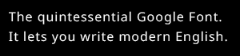 |
| Noto Sans ip | 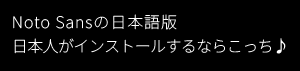 |
| MSゴシック 標準 | 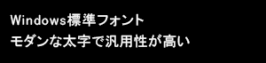 |
| MS明朝 標準 | 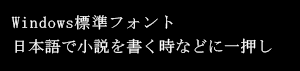 |
| Alex Brush | 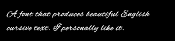 |
| Segoe UI | 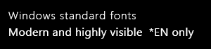 |
| Meiryo/メイリオ | 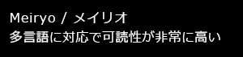 |
| Yu Gothic/游ゴシック | 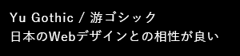 |
| Arial | |
| Calibri | 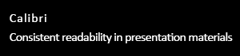 |
| Cambria | 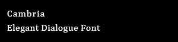 |
| やさしさゴシック | 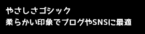 |
| しっぽり明朝 | 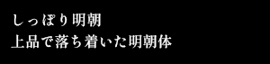 |
| コーポレート・ロゴ | 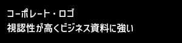 |
| BIZ UDPゴシック | |
| Futura | |
| Garamond | 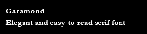 |
| Didot | 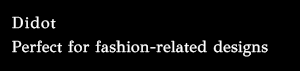 |
| Bodoni | 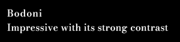 |
| MT Extra |
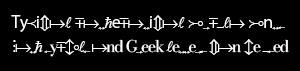 |